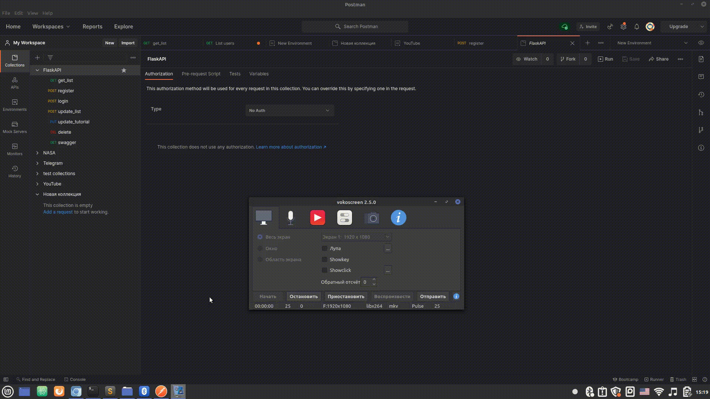

коллекции - нужны для храннеия группировка тестов.
Создать коллекцию можно следующим образом:
Здесь создается get запрос с токеном авторизации в заголовке
Здесь был отправлен GET запрос на мою локальную DATA API которая возвращает список всех постов конкретного авторизированного пользователя
POST запрос отличается от GET запроса тем, что он отправляет информацию на сервер. Информация в POST запросе пишется в теле запроса
Для написания тела запроса в Postman есть вкладка "body"